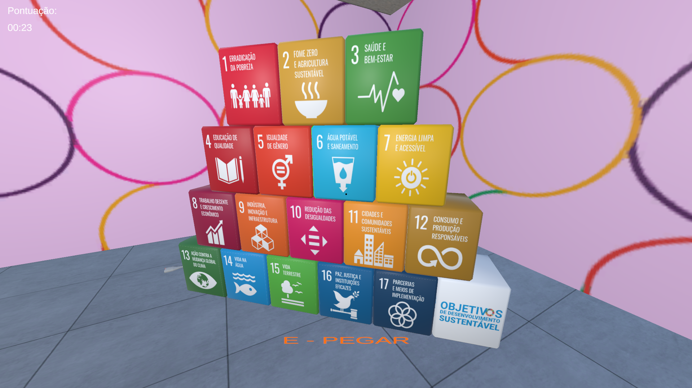
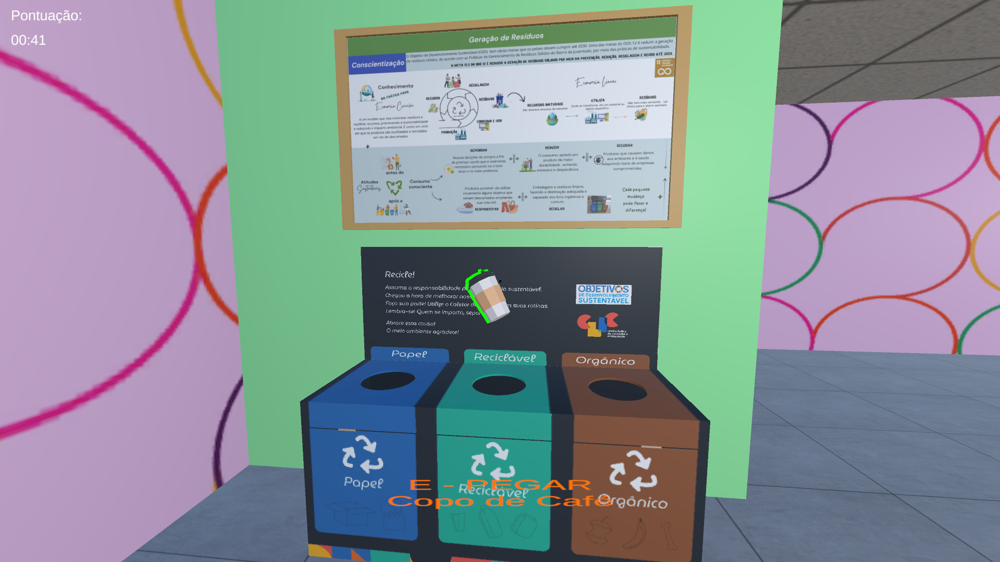
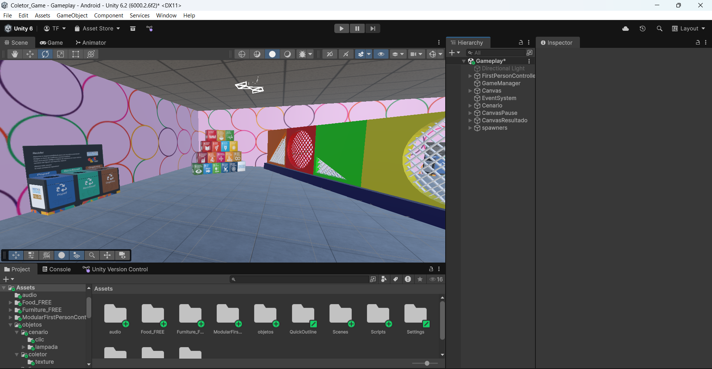
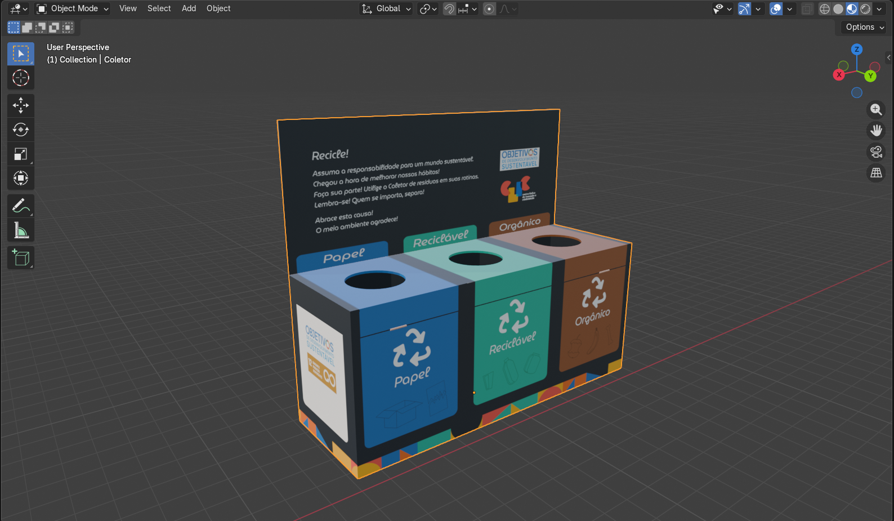
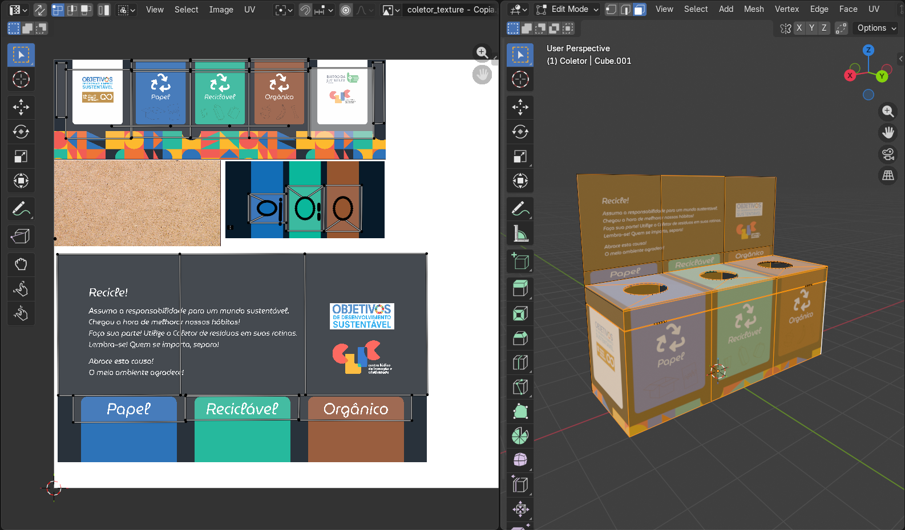
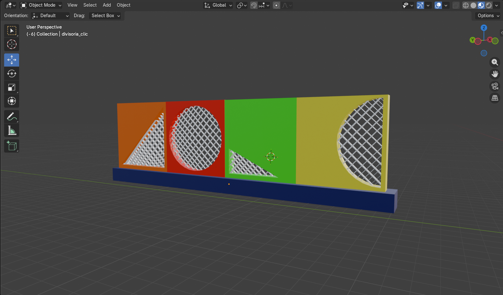
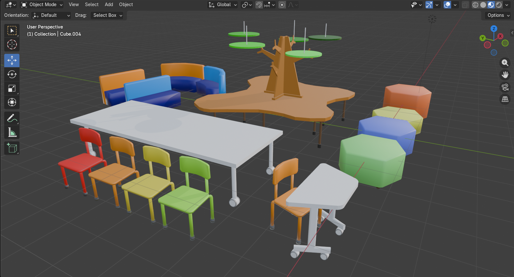

Desenvolvido por: Thiago Fernandes Felipe

O projeto consiste em um jogo educativo desenvolvido na Unity com foco em conscientização ambiental e incentivo à coleta seletiva de resíduos de forma lúdica e interativa. A proposta surgiu com o objetivo de aproximar crianças e adolescentes das práticas de reciclagem utilizadas no ambiente institucional, utilizando a gamificação como ferramenta de aprendizado.
No jogo, o jogador explora ambientes inspirados na própria instituição, como a biblioteca, coletando resíduos espalhados pelo cenário e realizando o descarte correto nos coletores apropriados. O sistema é baseado nos coletores reais utilizados pelo Bairro da Juventude, que realizam a separação dos resíduos em três categorias principais: papel, reciclável e orgânico.
A ideia principal do projeto foi transformar um tema educativo em uma experiência divertida e acessível, incentivando o aprendizado por meio da interação, da exploração e do desafio. Ao relacionar diretamente os resíduos aos coletores corretos, o jogo busca desenvolver nos jogadores a conscientização sobre a importância do descarte adequado e do cuidado com o meio ambiente.
Além do aspecto educacional, o projeto também teve como objetivo demonstrar como jogos digitais podem ser utilizados como ferramentas de apoio pedagógico, tornando o processo de aprendizagem mais dinâmico, intuitivo e próximo da realidade dos alunos.


Desenvolvimento da cena principal do jogo na Unity, utilizando um ambiente inspirado nos espaços reais da instituição. Nesta etapa foram implementados elementos de gameplay, interface visual, ambientação e mecânicas relacionadas à coleta seletiva, buscando criar uma experiência educativa de forma leve e interativa para crianças e adolescentes.

Criação do modelo 3D do coletor utilizado no projeto, desenvolvido no Blender com foco em otimização e fidelidade visual ao modelo real. O coletor foi adaptado para utilização em tempo real dentro da Unity, mantendo um estilo simples e funcional para o ambiente do jogo.

Organização do mapeamento UV e criação das texturas aplicadas ao modelo. Nesta etapa foi realizado o processo de preparação do objeto para utilização em tempo real dentro da Unity, buscando manter fidelidade visual ao coletor real da instituição e uma identidade visual educativa e acessível.

Modelagem de elementos decorativos e estruturas utilizadas na ambientação do jogo, contribuindo para a composição visual dos espaços inspirados no ambiente da instituição. Os objetos foram desenvolvidos com foco em otimização e adaptação para renderização em tempo real dentro da Unity.

Criação de novos objetos e elementos interativos para ampliação dos ambientes do jogo, incluindo móveis, mesas, cadeiras e estruturas decorativas inspiradas nos espaços da instituição. Os modelos foram desenvolvidos em estilo low poly com foco em otimização, identidade visual e enriquecimento da experiência do jogador durante a exploração dos cenários.